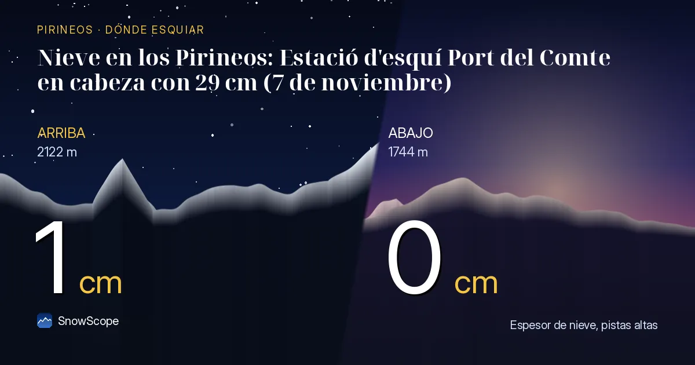
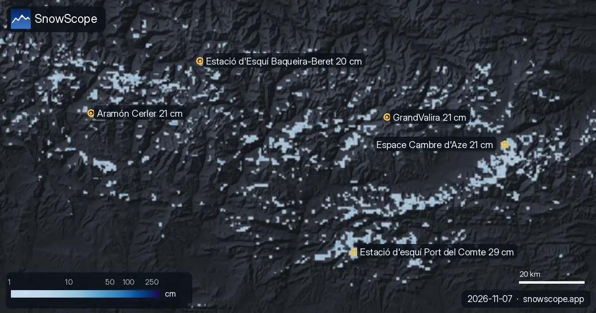

Nieve en los Pirineos: Estació d'esquí Port del Comte en cabeza con 29 cm (7 de noviembre)
Estació d'esquí Port del Comte (España) tiene hoy la nieve más profunda en los Pirineos, con unos 29 cm en las pistas altas. Le siguen Aramón Cerler con 21 cm y Espace Cambre d'Aze con 21 cm. 37 de 53 estaciones en los Pirineos tienen hoy nieve en las pistas altas, y SnowScope cuenta 1650 km² de superficie nevada.
Consulta la previsión de nieve en tiempo real de Estació d'esquí Port del Comte en la app SnowScopeEspesor de nieve, alertas de nieve polvo y mapa 3D, gratis.
Dónde está la nieve hoy
La superficie nevada pasó de 2380 km² el 5 de noviembre a 1650 km² hoy, y nuestra previsión da 720 km² el 10 de noviembre.
| Estación | Espesor de nieve | Nieve nueva, 72 h | Previsto, próximos días | Cota máx. |
|---|---|---|---|---|
| Estació d'esquí Port del Comte | 29 cm | 2 cm | 0 cm | 2122 m |
| Aramón Cerler | 21 cm | 2 cm | 0 cm | 2618 m |
| Espace Cambre d'Aze | 21 cm | 1 cm | 0 cm | 2377 m |
| GrandValira | 21 cm | 1 cm | 0 cm | 2619 m |
| Estació d'Esquí Baqueira-Beret | 20 cm | 2 cm | 0 cm | 2600 m |

Frente a los inviernos pasados
A unos 1933 m, Estació d'esquí Port del Comte tiene hoy 16 cm; un 7 de noviembre normal tiene 0 cm.
Es más que en 46 de los 46 inviernos pasados en esta fecha.
En inviernos pasados la mejor nieve en Estació d'esquí Port del Comte solía llegar a mediados de enero / finales de enero.
Una ventaja así cuenta sobre todo para las pistas bajas y medias, que suelen esperar a diciembre para tanta nieve.
Cota a cota en Estació d'esquí Port del Comte: 1744 m 0 cm en el suelo, 0 cm más en los próximos 7 días; 1933 m 0 cm en el suelo, 0 cm más en los próximos 7 días; 2122 m 1 cm en el suelo, 0 cm más en los próximos 7 días.

Lo que miden las estaciones
La estación de medida Núria (1.971 m) (1971 m) midió 8 cm de nieve en el suelo el 2 de noviembre, con 1 cm de nieve nueva en 24 horas. La estación de medida Boí (2.537 m) (2537 m) midió 5 cm de nieve en el suelo el 2 de noviembre. La estación de medida Das - Aeròdrom (1096 m) midió 3 cm de nieve en el suelo el 2 de noviembre.
Las cifras de las estaciones de esquí son estimaciones para las pistas altas; las estaciones de medida miden en un punto, en la fecha indicada.
Comparado con los inviernos pasados
Buen comienzo en Estació d'esquí Port del Comte: a 1933 m, SnowScope da hoy 16 cm, más que en esta fecha en 46 de los 46 inviernos pasados (lo habitual: 0 cm).
A 2060 m en Aramón Cerler, los 0 cm de hoy están cerca de lo normal para la fecha: más que en 16 de los 46 inviernos pasados (lo habitual: 1 cm).
Buen comienzo en Espace Cambre d'Aze: a 2004 m, SnowScope da hoy 8 cm, más que en esta fecha en 44 de los 46 inviernos pasados (lo habitual: 0 cm).
Lo que viene
En Estació d'esquí Port del Comte, la cota de congelación llega a 3080 m-3720 m el 8 de noviembre, por encima de la cota alta de la estación (2122 m): ese día puede haber lluvia o nieve húmeda en todas las pistas.
Las previsiones a varios días pueden cambiar: vuelve a mirar el mapa el día antes de viajar.
Consejos para esquiadores
- Nieve en el mapa no significa que la estación esté abierta: consulta remontes y fechas de apertura en su web.
- La nieve de principio de temporada es fina. Quédate en pistas abiertas y pisadas: piedras y hierba están justo debajo.
- Busca la nieve en lo alto y en las laderas orientadas al norte: la guardan más tiempo; las orientadas al sur la pierden antes.
- Antes de salir fuera de pista o de travesía, lee el boletín oficial de aludes (enlaces abajo).
- Activa una alerta de nieve polvo en la app SnowScope para saber cuándo Estació d'esquí Port del Comte recibe nieve nueva.
Sobre estas cifras
Los espesores de nieve de las estaciones son la nieve más profunda en las pistas altas en la fecha indicada; son estimaciones para una zona, no una medida en un punto. Las previsiones pueden cambiar. Consulta siempre el boletín oficial de aludes antes de salir fuera de pista.
Boletines oficiales de aludes: Météo-France – Bulletin d'estimation du risque d'avalanche
Citar este informe
Para investigación, docencia o prensa: cifras y gráficos reutilizables libremente bajo CC BY 4.0 con esta cita.
SnowScope (2026), Nieve en los Pirineos: Estació d'esquí Port del Comte en cabeza con 29 cm (7 de noviembre), https://snowscope.app/blog/es/2026/11/pyrenees-snow-depth-today-7-november-2026.html, consultado el 2026-11-07
SnowScope (Atlas Labs). (2026, November 7). Nieve en los Pirineos: Estació d'esquí Port del Comte en cabeza con 29 cm (7 de noviembre). SnowScope snow reports. https://snowscope.app/blog/es/2026/11/pyrenees-snow-depth-today-7-november-2026.html
BibTeX
@misc{snowscope2026pyreneessnowdepthtoday7n,
author = {{SnowScope (Atlas Labs)}},
title = {Nieve en los Pirineos: Estació d'esquí Port del Comte en cabeza con 29 cm (7 de noviembre)},
year = {2026},
month = nov,
howpublished = {\url{https://snowscope.app/blog/es/2026/11/pyrenees-snow-depth-today-7-november-2026.html}},
note = {Published 2026-11-07 10:26 UTC; accessed 2026-11-07}
}· CC BY 4.0 · Métodos, datos y herramientas →
Sigue Estació d'esquí Port del Comte
Gratis: un aviso cuando llega la nieve y la previsión cada mañana.
Más partes de nieve

¿Planeas un viaje en diciembre a Baqueira Beret? Mira nuestro historial de nieve, precios de forfaits desde 70,00 € para un pase de 1 día, y cómo se compara con Astún-Candanchú.

Compara Grandvalira y estaciones españolas en diciembre de 2026 en cuanto a espesores de nieve, cotas de remontes y precios desde 49,00 EUR.